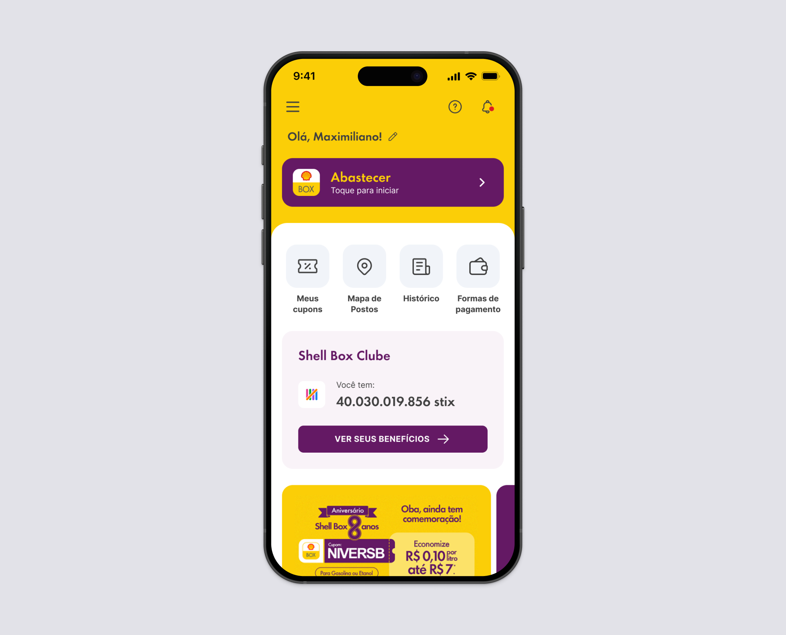
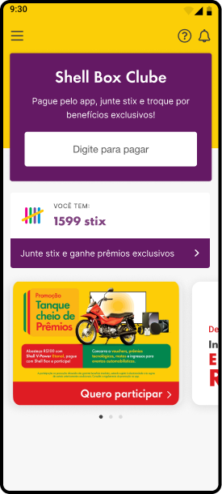
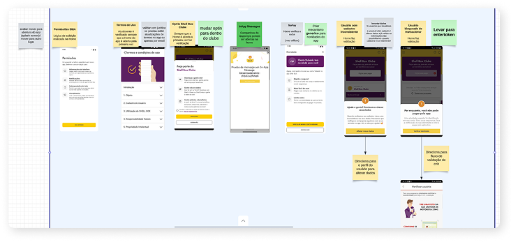
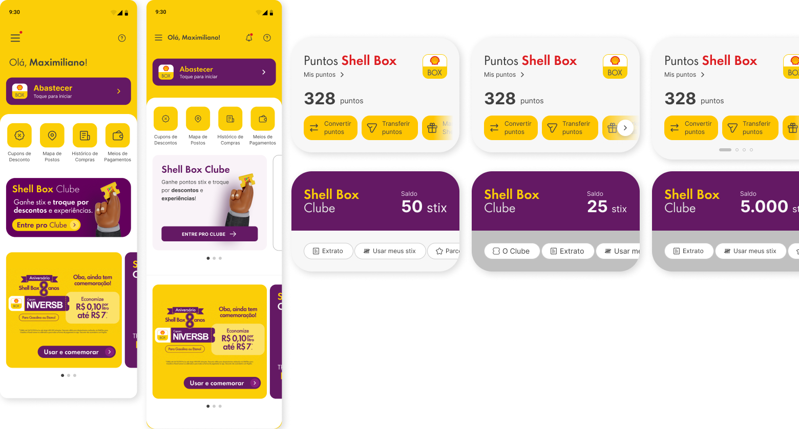
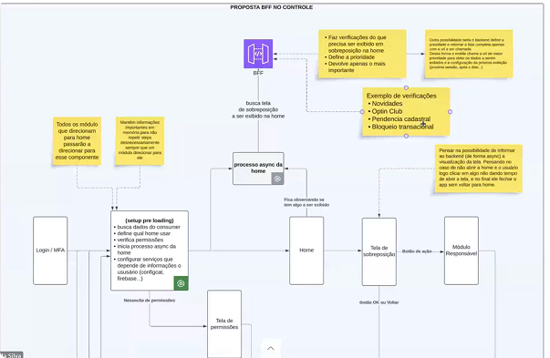
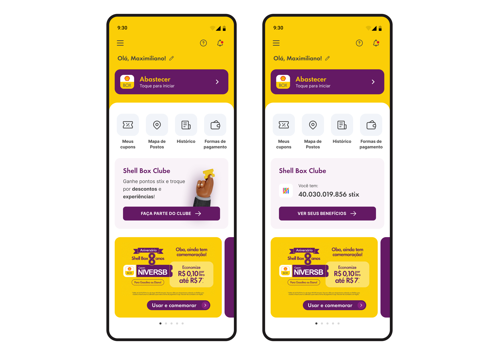

Increase fuel conversion from the home screen
Give users a fast, clear path to initiate a fuel transaction directly from the home. The primary CTA had to be unmissable.
Redesigning Shell's fueling and loyalty app home screen to give users a faster path to the actions that matter, driving a 21-point lift in in-app fuel conversions.

Shell Box is Shell's official fueling and loyalty app in Brazil. Its home screen is the product's most critical touchpoint: the place where users initiate refueling, access loyalty benefits, and discover features.
I led the full redesign of this screen, owning decisions across user needs and technical constraints. Working under LGPD restrictions that limited access to external user testing, I structured the discovery process around internal usability sessions and behavioral data analysis.
I also integrated AI at three deliberate points in the process, using it to move faster without compromising the quality of decisions: research synthesis, ideation acceleration, and developer handoff documentation.
Impact
Involved teams
I built the discovery process around what was available: internal usability sessions with Raizen employees and behavioral analysis of the existing home screen.
The existing home had grown into a single rigid structure with no modularity. Adding, reordering, or personalizing content required engineering involvement at every turn.
The redesign had to solve the immediate UX problem and establish a modular architecture that would give product and growth teams future flexibility, without blocking the release on features that could come later.

The project touched differente stakeholder groups, including Legal, Payments, Benefits, CX, and Growth. Each team had a stake in the home screen, and each had different priorities.
I facilitated alignment across all of them, running a cross-functional Design Critique before development to surface conflicts early and build confidence in the direction before any engineering effort was committed.
Every layout and hierarchy decision was evaluated againstthree main outcomes:
Give users a fast, clear path to initiate a fuel transaction directly from the home. The primary CTA had to be unmissable.
Surface the loyalty program prominently enough that non-enrolled users saw a clear invitation and enrolled members could act on their benefits without leaving the home.
Replace the monolithic layout with a modular card system that could support dynamic content, personalization, and future features without requiring a full redesign.
With external testing blocked by legal constraints, I structured the discovery around two parallel tracks. I ran stakeholder interviews and analyzed behavioral data from the existing home screen. At the same time, I built a custom AI agent in Claude Projects to synthesize competitive benchmarks, map behavioral patterns across similar apps, and build a structured foundation for design decisions faster than desk research alone would allow.
Three findings shaped everything that followed.
Users struggled to locate the fueling CTA quickly. Promotions, loyalty banners, and text-heavy blocks competed with the primary action and diluted the visual hierarchy.
Shell Box Clube existed on the home but was deprioritized. Users with active memberships were not engaging with their benefits from the home screen, and non-enrolled users rarely noticed the join prompt.
The home triggered multiple simultaneous calls: terms updates, Clube opt-ins, transactional blocks, and in-app messages. The result was a slow, jarring loading experience the architecture team needed to address alongside the visual redesign.
I analyzed how large consumer apps prioritize and hierarchize information on their home screens, with a focus on apps that combine a primary transactional action with secondary navigation and loyalty modules.
The patterns I studied covered seven flows that appeared consistently across competitors:
Working with the architecture team, I also mapped all parallel flows triggered on home load. Reducing redundant API calls and smoothing the loading experience was as much a part of the redesign as the visual layer.

Before sketching anything, I defined four principles to make every design decision auditable. If a layout choice could not be justified against one of these, it did not ship.
Fuel initiation and Shell Box Clube access must be the clearest elements on screen. Every other element is secondary to those two.
The layout must simplify scanning and eliminate visual noise. If an element competes with the primary action without adding proportional value, it comes out.
Elements must communicate importance at a glance. A user opening the app in five seconds at a gas station cannot afford to hunt for the start button.
The structure must accommodate future features, personalization, and content updates without requiring a full redesign. Modularity is the constraint, not decoration.
I used AI to accelerate the ideation phase: generating solution variations, stress-testing design hypotheses against the four principles, and structuring proposals before presenting them to stakeholders. This reduced revision cycles and let me arrive at stronger, better-rationalized design directions in less time.
In parallel, I ran multiple visual explorations, testing different module arrangements, Clube card states for enrolled and non-enrolled users, and hierarchy approaches across several iteration rounds.

Working with the architecture team, I mapped all parallel flows triggered on home load to identify which calls were redundant and how a BFF layer could reduce overload. Smoothing the technical loading experience was part of the same design problem as the visual hierarchy.

With external testing still blocked, I ran moderated usability sessions with 5 internal Raizen employees, observing navigation behavior and validating the content prioritization hypotheses I had built during discovery.
Three findings came back clearly.
Users located and initiated the fueling flow faster than in the current version. The prominence of the primary action was validated as correct.
The redesigned loyalty module was better understood by non-enrolled users. The join CTA read clearly as an invitation, not a requirement. The distinction between enrolled and non-enrolled states worked as intended.
The icon grid for secondary features (map, history, coupons, payment methods) improved feature discoverability without competing with the primary fueling action.
Following the sessions, I facilitated a cross-functional Design Critique with all involved teams. It surfaced edge cases, aligned everyone on the solution before development started, and built the confidence the project needed to move forward without an additional revision round.
LGPD constraints limited direct contact with external users. To fill that gap in a structured, defensible way, I built a custom agent in Claude Projects. It synthesized competitive benchmarks, identified behavioral patterns across similar consumer apps, and helped build the discovery foundation that would have otherwise required weeks of manual desk research. The agent did not replace judgment: it compressed the time to get to better-informed decisions.
During ideation, I used AI to rapidly generate and evaluate design directions, stress-test hypotheses against the four design principles, and prepare more structured proposals for stakeholder reviews. This shortened the alignment cycle and reduced the number of revision rounds before the Design Critique.
Closer to delivery, I used AI to generate structured handoff documentation automatically, translating design decisions and component states into developer-ready annotations. This reduced handoff ambiguity for the engineering team and cut the back-and-forth that typically follows a complex component delivery.
The redesigned home introduced a modular card structure: each section rendered as an independent, reorderable module. I defined consistent visual rules for spacing, card elevation, type hierarchy, and state variations: loaded, loading, empty, and error. Aligning the new components with the existing design system meant the home could serve as a scalable template for future personalization, not a one-off redesign.

The new home shipped with a clear hierarchy anchored by a single dominant fueling CTA, a secondary icon grid for quick navigation, a contextual Clube card adaptive to membership status, and a dynamic promotions area. The modular architecture gave product and growth teams flexibility that did not exist before.
Home-to-fuel conversion rate. The clearer CTA hierarchy made the primary action faster to find and act on.
Session abandonment rate. The redesign nearly eliminated bounce from the home screen — users who landed were staying and acting.
Engaged sessions. A 15-point lift in sessions where users took meaningful action beyond the home.
Shell Box Clube visibility. The loyalty module surfaced the program to users who had never seen it — a direct hit on one of the three stated business objectives.
Working without access to external users forced a more rigorous use of data and internal testing. The AI research agent I built filled that gap in a structured, defensible way. The constraint made the process more intentional, not less effective.
Not all planned features shipped in v1. I made the deliberate call to prioritize what would generate immediate, measurable impact, documenting a clear roadmap for future iterations rather than delaying the release for completeness. The work that shipped set the baseline. The roadmap set the direction.
Using AI across research, ideation, and handoff saved meaningful time. But every decision it supported still required human validation. The value was not in automation: it was in speed to better thinking.